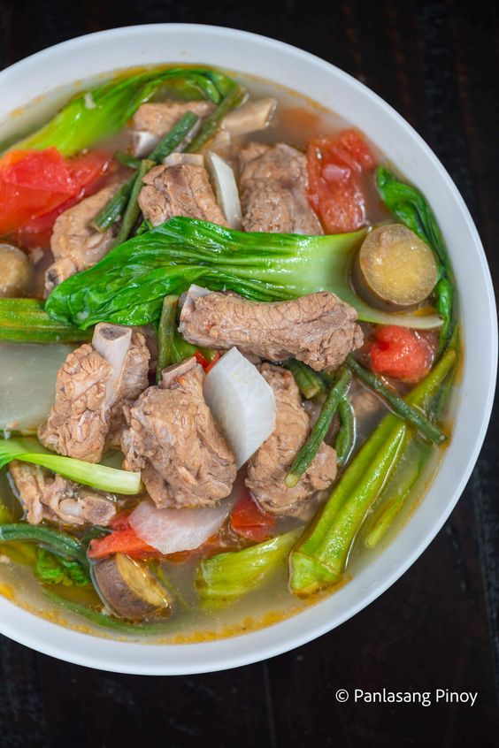

Homepage
Pork Sinigang

Sinigang na Baboy with Gabi is a popular Filipino soup dish. It has pork belly with vegetables such as okra,
kangkong (ong choy), snake beans, onion, dikon radish, and taro. It is cooked in a sour broth. The souring agent
is usually unripe tamarind. This recipe makes use of sinigang sa sampaloc mix, which is the powdered version of
tamarind.
Sinigang na baboy is best eaten with spicy fish sauce (this is also called patis in the Philippines). I scoop a
few fish sauce using a spoon and pour it over the pork, and then eat it with rice.
This sinigang version is special because of the taro. This ingredient is locally referred to as gabi. It helps
make the soup thicker.
This cooking video shows you in detail how to cook sinigang na baboy with gabi the Panlasang Pinoy way. Have fun
watching the video and enjoy the food.
Ingredients
- 2 lbs pork belly, sliced into cubes
- 2 to 3 cups kangkong leaves
- 3 pieces long green chili pepper (siling pansigang)
- 2 ripe tomatoes, quartered
- 8 cups water
- 1 cup sliced daikon radish (labanos)
- 10 to 12 pieces snake beans, cut in 2 inch length pieces
- 1 large yellow onion, quartered
- 15 pieces okra
- 2 pieces taro, peeled and cut in half (gabi)
- 2 (20 g) packs Knorr Sinigang sa Sampaloc Mix Original
- 3 tablespoons fish sauce (patis)
- ¼ teaspoon ground black pepper
Procedure
- Pour water into a cooking pot. Let it boil.
- Add onion and tomato. Boil for 5 to 8 minutes.
- Put the pork in the cooking pot. Boil for 25 minutes.
- Add the taro. Cover and continue to boil for 30 minutes.
- Add Knorr Sinigang sa Sampaloc mix, fish sauce, and ground black pepper; stir.
- Put the daikon radish in. Cook for 3 to 5 minutes.
- Add the chili peppers, okra, and snake beans. Cook for 7 minutes.
- Add the kangkong. Cover the cooking pot and turn off the heat. Let it stay covered for 5 minutes.
- Transfer to as serving bowl. Serve with a small bowl with patis and spicy chili.